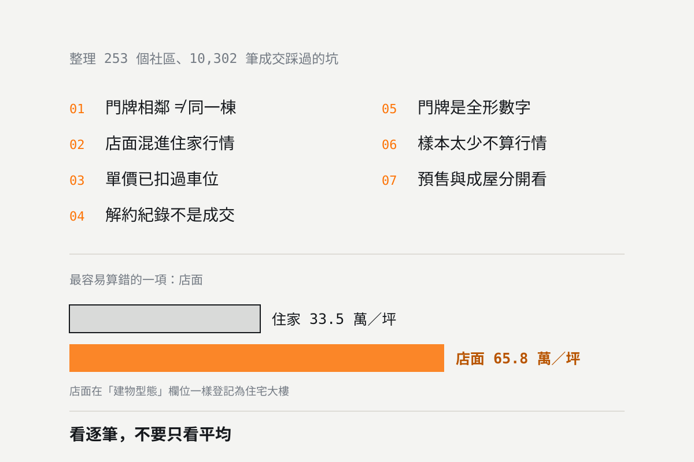

實價登錄怎麼看才不會被誤導？建 255 個社區學到的 7 件事
實價登錄是公開資料，但直接拿來比價很容易算錯。本文整理我們整理 255 個社區、26,276 筆成交時實際踩過的七個坑：門牌怎麼確認是同一棟、店面會把行情拉高一倍、單價其實已經扣過車位、解約紀錄要排除、全形數字、小樣本、預售與成屋不能混。

統計基準：本文的統計以本站收錄社區的內政部實價登錄成交紀錄計算，資料範圍 2020 年 1 月起、統計基準日 2026-10-08。資料每月持續累積（內政部於每月 1、11、21 日批次公告，本站於公告隔日更新），最新的全站數字請見各社區頁與生活圈頁。
實價登錄是台灣買房最有價值的公開資料，但它是一筆一筆的原始交易紀錄，不是整理好的行情表。直接拿來比價，算錯的機率比你想的高。
這篇不是教學文，是我們整理 255 個社區、26,276 筆成交時真正踩過的坑。每一個都曾經讓我們算出錯誤的數字，而且多數不會跳出任何警告——你只會得到一個看起來很合理、但其實是錯的行情。
一、同一條路的門牌，不一定是同一棟
最基本也最常錯的一步：你查到「某某路 100-120 號」有一批成交，就當成同一個社區的行情。但相鄰門牌很可能是兩棟不同時間蓋的建築。
我們用的驗證方法是：同一個門牌範圍內，所有成交的「建築完成年月」與「總樓層數」必須完全一致。只要有一筆不同，就代表混到隔壁棟了。
這組例子也說明了這個方法的極限：同一個建商在同一時期蓋的兩棟樓，完工年月與樓層會完全一樣，這時候驗證法分不出來。必須再比對實際門牌範圍與建案名稱。驗證法是必要條件，不是充分條件。
另一種狀況是同一個社區橫跨兩條路。領市館的門牌同時有新榮街 51 巷 2-8 號與新勝街 32-36 號，兩組門牌的完工年月（2006 年 3 月）與樓層（地上 15 層）一致，才確認是同一棟。只查其中一條路，會漏掉一半的成交。
二、店面會把行情拉高一倍
這是影響最大的一個。本站 26,276 筆成交裡有 125 筆是店面：
| 類型 | 筆數 | 單價中位數 |
|---|---|---|
| 住家 | 26,150 筆 | 25.9 萬／坪 |
| 店面 | 125 筆 | 60.0 萬／坪 |
店面的單價中位數幾乎是住家的兩倍，最高的幾筆超過 100 萬／坪。一個只有二三十筆成交的社區，混進兩三筆店面，平均單價就會被拉高好幾萬。
麻煩的是店面在「建物型態」欄位一樣登記為「住宅大樓」，從型態欄看不出來。要看「主要用途」欄位有沒有商業用、店鋪、店面。
而且不是所有「主要用途：商業用」都是店面。二樓以上即使用途登記為商業用，實際上也不是店面。正確的判定是「主要用途含商業／店鋪／店面」且「移轉層次在一樓」，兩個條件都要成立。我們一開始只用第一個條件，誤標了一批社區。
三、單價已經扣過車位，不要再扣一次
這是最反直覺的一個。很多人以為實價登錄的單價含車位，所以要自己把車位價扣掉再除以坪數。
實際上，當「車位總價元」欄位有揭露時，內政部給的「單價元平方公尺」已經是扣除車位後的數字。再扣一次就會算出偏低的假單價。
我們用真實資料驗證過：美術東四路 43 號那筆，自己再扣一次車位算出 45.2 萬／坪，不扣是 50.4 萬／坪——而內政部原始欄位給的就是 50.4 萬。我們曾經寫過一段自行扣除的程式，後來整段移除。
反過來，車位價未揭露（登記為 0）但車位面積大於 0 的紀錄，單價本來就會偏低，因為車位面積被算進坪數卻沒有對應價格。這種紀錄無從補正，只能知道它偏低，比價時要排除或另行標註。
四、解約的紀錄不是成交
實價登錄有「解約情形」欄位。簽約後解約的案件仍會留在資料裡，但那不是真實成交。
解約的價格常常是異常值——有些是價格談崩前的高價，有些是特殊條件。不排除掉，少樣本的社區會被嚴重扭曲。做法很簡單：解約情形欄位非空就整筆排除。
五、門牌是全形數字
實價登錄的地址欄位用的是全形數字：「美術東四路６９８號」，不是「美術東四路698號」。
如果你用程式或試算表比對門牌，不先把全形轉成半形，關鍵字永遠對不上，結果會是「這個社區查無成交」。我們第一次做社區比對時就卡在這裡，以為是門牌抄錯了。
手動查詢的人比較不會遇到這個問題，但如果你用複製貼上的方式在資料檔裡搜尋，一樣會中招。
六、樣本太少的行情不要信
本站 255 個社區裡，有 71 個社區的累計成交不到 12 筆。對這些社區來說，單一筆特殊交易（頂樓、親友移轉、含高級裝潢）就足以改變整個社區的「行情」。
- 01 少於 12 筆：只能看逐筆紀錄，不應該計算平均或中位數當行情。
- 02 12 到 30 筆：可以看中位數，但要同時看區間，不要只報一個數字。
- 03 30 筆以上：中位數相對穩定，但仍建議剔除頭尾各一成的極端值。
我們在每個社區頁都標註成交筆數與涵蓋期間，筆數少的會特別提醒不宜單獨作為行情依據。也遇過更極端的狀況：透天的大基地配小建物，算出來的單價會是數百萬／坪的假數字，所以另外設了 3 到 150 萬／坪的合理區間過濾。
七、預售與成屋不能混著算
| 類型 | 筆數 | 登錄的是什麼時間點 |
|---|---|---|
| 成屋 | 10,804 筆 | 交屋移轉時的市場 |
| 預售 | 1,150 筆 | 簽約日，可能是兩三年前 |
預售屋登錄的是簽約日的價格。一個 2023 年簽約、2026 年交屋的預售案，它的成交價反映的是 2023 年的市場，卻和 2026 年的成屋成交並排出現在同一份資料裡。
把兩者放進同一組算平均，等於把不同時間點的價格混在一起。本站在每個社區頁都標註預售筆數，並把類型標在每一筆紀錄上。
自己查的時候，怎麼做比較穩
- 01 先確定門牌範圍。用建築完成年月與總樓層交叉驗證，不要只看路名與號碼相近。
- 02 排除店面與解約。看主要用途與移轉層次，看解約情形欄位。
- 03 單價直接用內政部給的，不要自己算。除非車位價未揭露，那種紀錄另外標註。
- 04 看逐筆，不要只看平均。挑樓層、坪數、是否含車位都接近的來比。
- 05 成屋與預售分開看。
- 06 筆數太少就不要算行情。
本站 255 個社區頁已經把上面這些都處理過了：每一頁列出逐筆成交（日期、樓層、坪數、單價、類型），統計列標示筆數、單價範圍、預售筆數與涵蓋期間，店面成交保留在列表中但加「店面」標籤且不計入住家單價範圍。可以從社區總覽查，或從四個生活圈頁進去：美術館特區、農十六特區、瑞豐・巨蛋、中都重劃區。
用這些資料做過的分析，可以參考高雄屋齡和房價差多少與公設比高就是買貴了嗎。
澄果團隊諮詢電話：07-9766977
資料查核日期：2026 年 10 月 8 日。本文所述為本站整理高雄四大生活圈 255 個社區、26,276 筆成交紀錄的實務經驗，資料來源為內政部不動產交易實價查詢服務網。欄位定義與揭露方式可能隨主管機關規定調整，請以內政部公告為準。